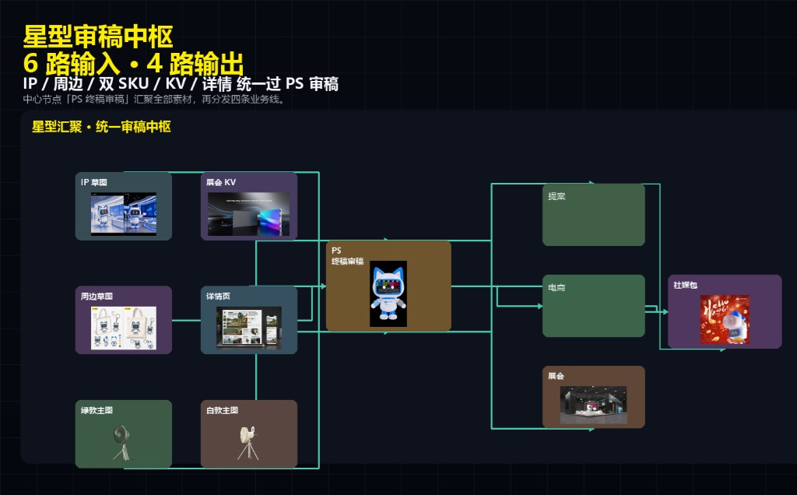
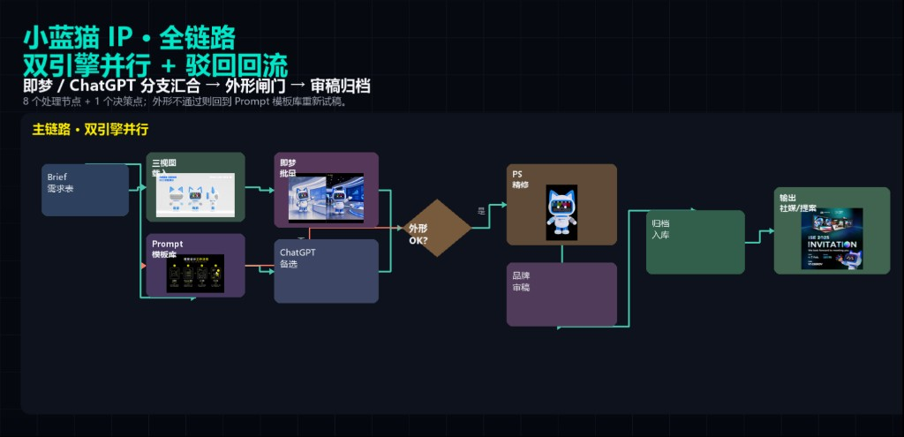
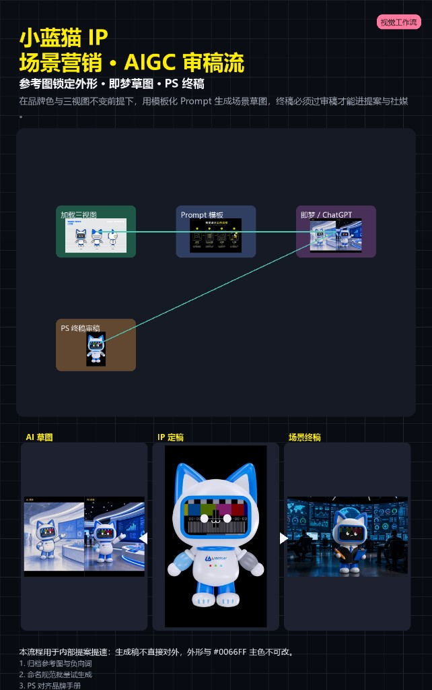
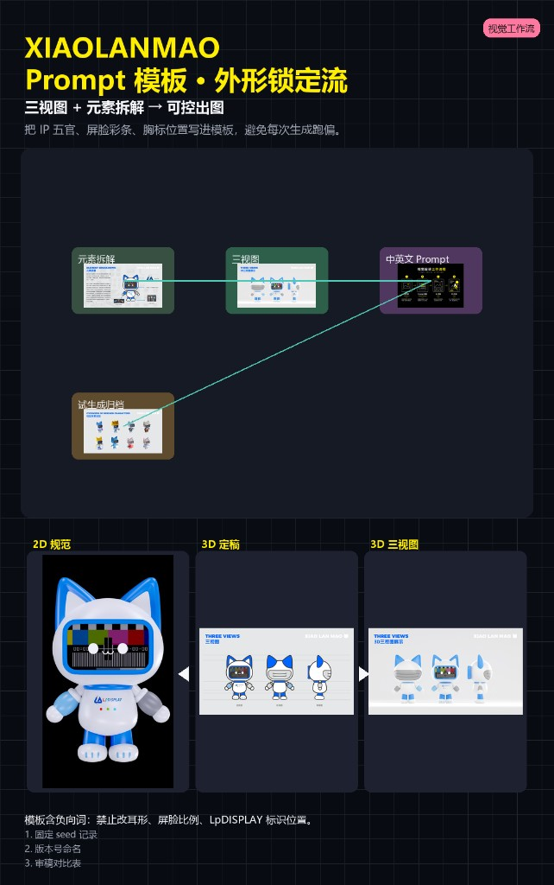
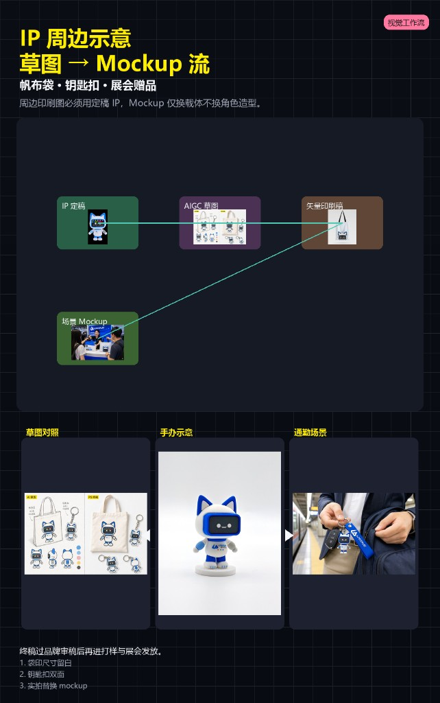
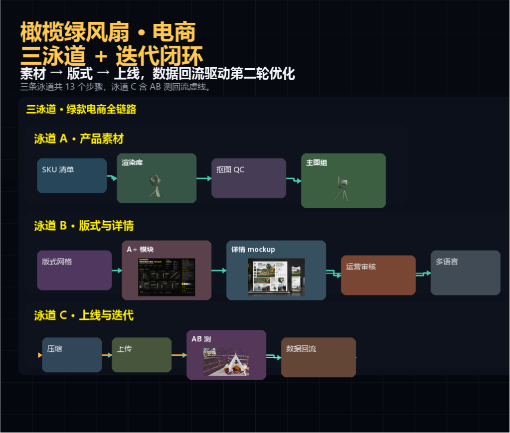
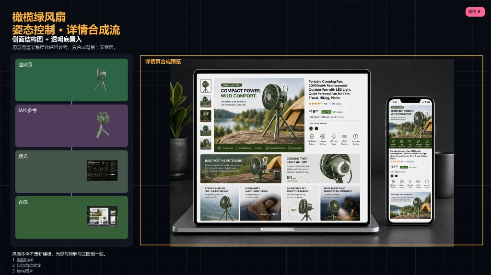
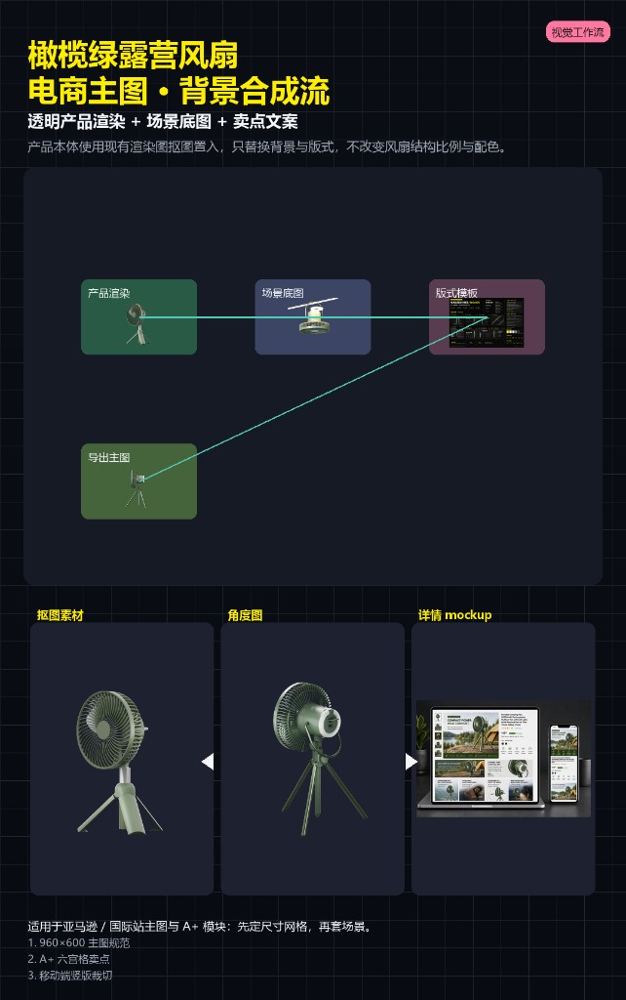
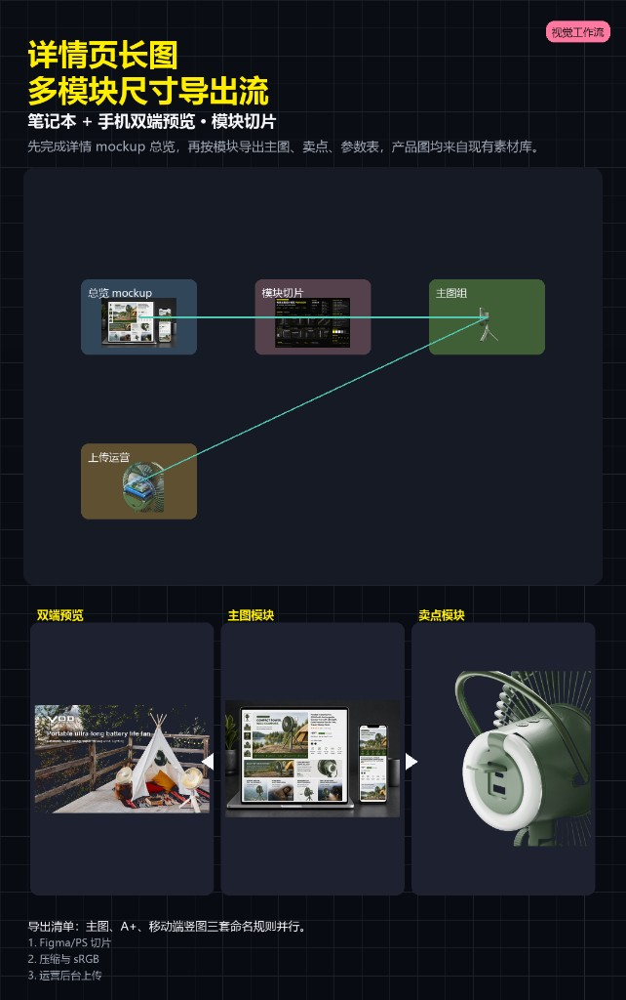
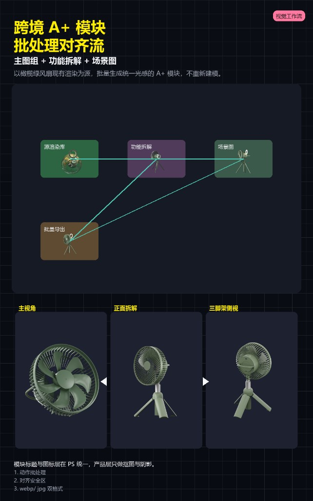

星型汇聚 · 统一审稿中枢
所有 AIGC 出图与合成稿先入「PS 终稿审稿」节点质检，通过后再进入各渠道物料库，避免多线并行时风格漂移。

04 · AIGC
2025.05 起建立「PS 终稿审稿中枢」汇聚 IP / 电商 / KV / 详情等素材，再按品牌 IP 与电商视觉分线执行；含双引擎并行、三泳道闭环与上线质检驳回回流。
6 路输入（IP 草图、展会 KV、周边、详情、绿/白款主图）统一过 PS 终稿审稿，再分发提案、电商、展会、社媒包四条业务线。
所有 AIGC 出图与合成稿先入「PS 终稿审稿」节点质检，通过后再进入各渠道物料库，避免多线并行时风格漂移。

小蓝猫 XIAOLANMAO：全链路双引擎（即梦 / ChatGPT）+ 外形闸门与驳回回流；分场景试稿、Prompt 锁定与周边 Mockup 落地。
需求表 → 三视图 + Prompt 模板库 → 即梦批量 / ChatGPT 备选 → 外形 OK？→ PS 精修 → 品牌审稿 → 归档 → 社媒 / 提案输出。

三视图 + 场景参考 → 即梦出图 → PS 审稿。试 seed 时外形不得漂移，屏显彩条与胸前 Logo 为硬约束。

参考图锁形 · 即梦 / ChatGPT 草图 · PS 终稿。品牌色 #0066FF 与三视图不变，模块化 Prompt 批量试生成。

三视图 + 元素拆解 → 可控出图。将五官、屏显彩条、胸前 LpDISPLAY 标识位置写入模板，防止生成跑偏。

帆布袋 · 钥匙扣 · 展会赠品。印刷图必须用定稿 IP，Mockup 只换载体不换角色造型。

IP 定稿与手册见 IP 设计 · XIAOLANMAO 设定。
橄榄绿风扇：产品素材 / 版式详情 / 上线迭代三泳道并行，数据回流驱动第二轮优化；模块级合成不重模。
泳道 A 产品素材（SKU → 渲染库 → 抠图 QC → 主图组）· 泳道 B 版式与详情（网格 → A+ → mockup → 运营审核 → 多语言）· 泳道 C 上线迭代（压缩 → 上传 → AB 测 → 数据回流）。

渲染源 + 侧面结构参考 → 版式 → 合成。沿用现有渲染角度作结构参考，只合成背景与文案层，风扇本体不重模。

透明产品渲染 + 场景底图 + 卖点文案。风扇结构、比例与配色不改，仅替换背景与版式模板。

笔记本 + 手机双端预览 · 模块切片。先完成详情 mockup 总览，再按主图、卖点、参数表分模块导出。

主图组 + 功能拆解 + 场景图。以现有渲染为源批量生成统一光感 A+ 模块，不重新建模。

对应主图与 A+ 成片见 产品视觉 · 跨境电商。


更多 IP 场景融合见 IP 设计 · 应用场景。
渲染 / 版式 / 文案并行 QC → 风险判断 → 上线包或返工；含驳回回流版式与复审合并路径。
渲染 QC、版式 QC、文案 QC 并行检查后合并；通过则打包上线，驳回则返工并回流版式环节复审。

生成内容仅作内部提案与草图，对外发布物必须经过品牌审稿与上线质检；电商参数与认证标识以设计稿 + 产品确认为准。